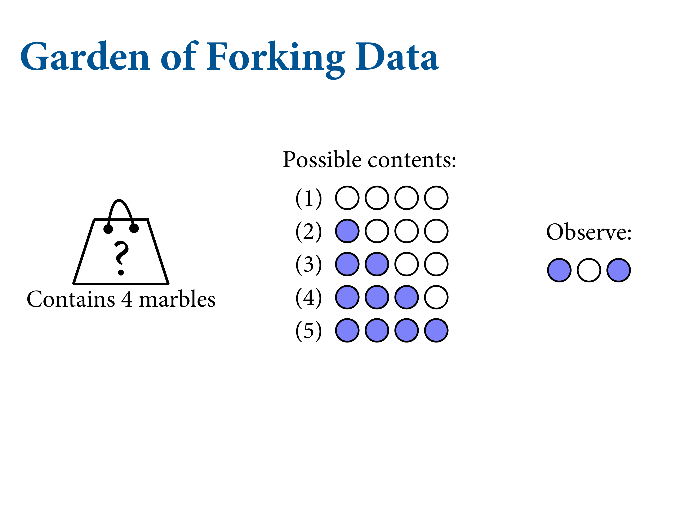
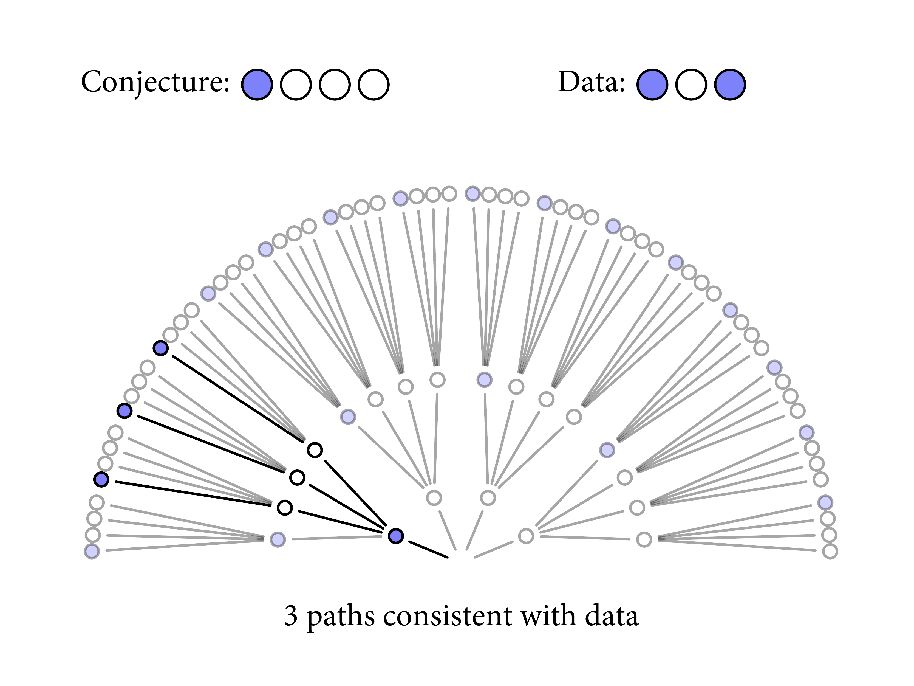
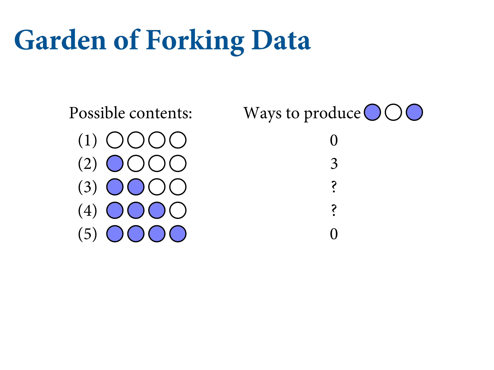
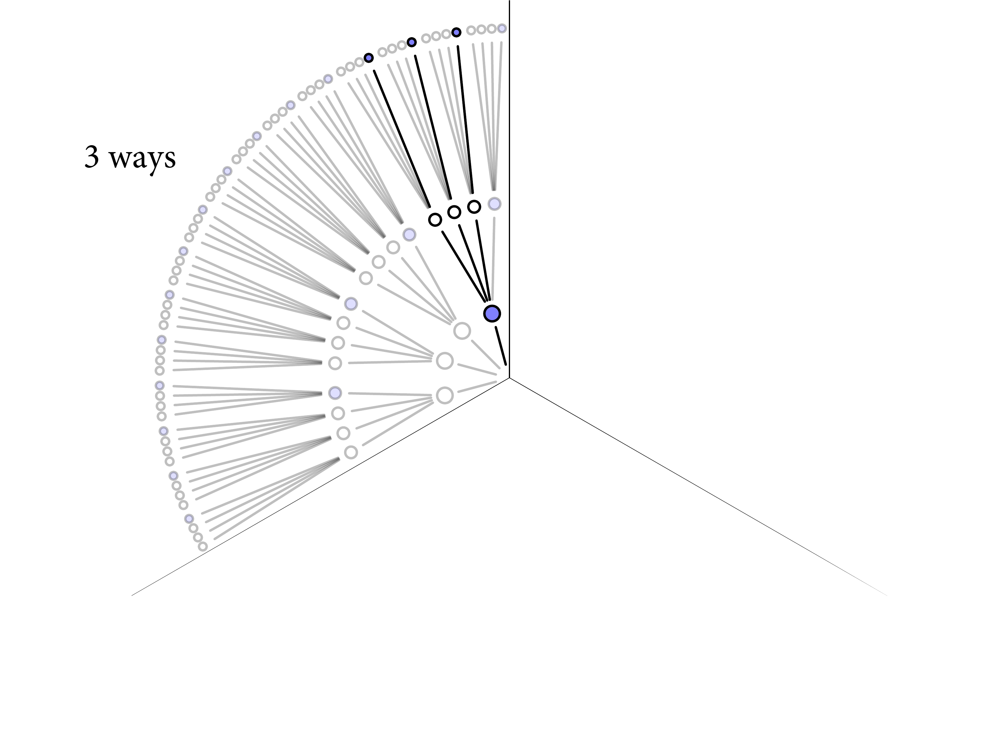
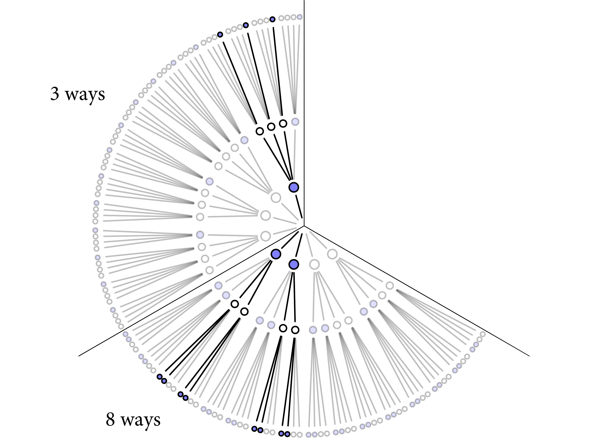
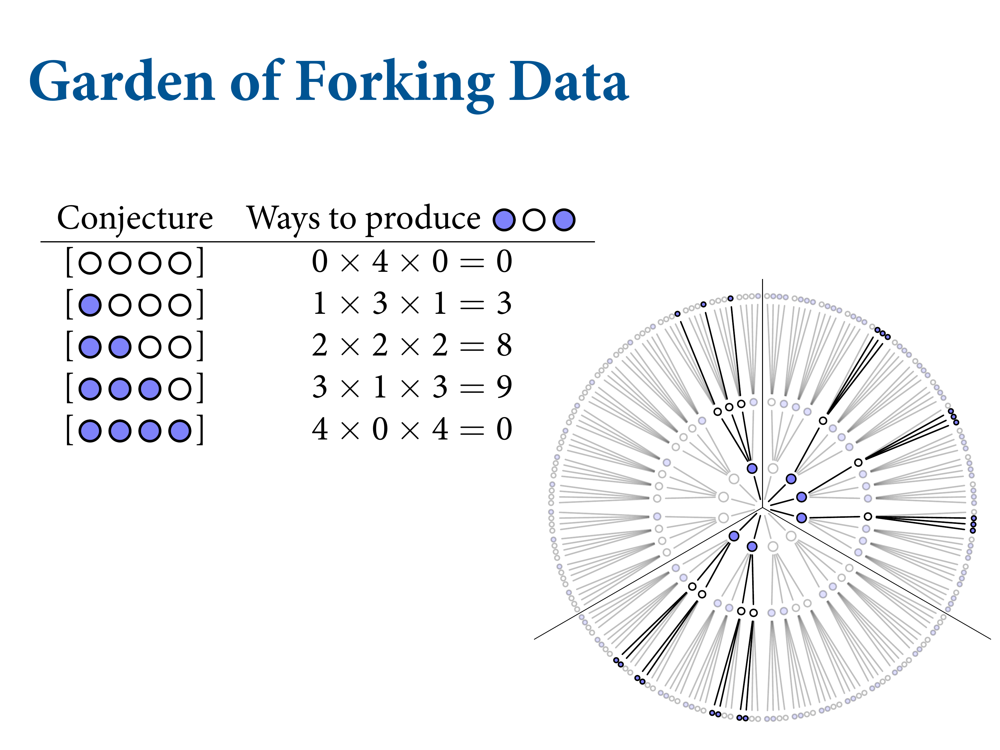
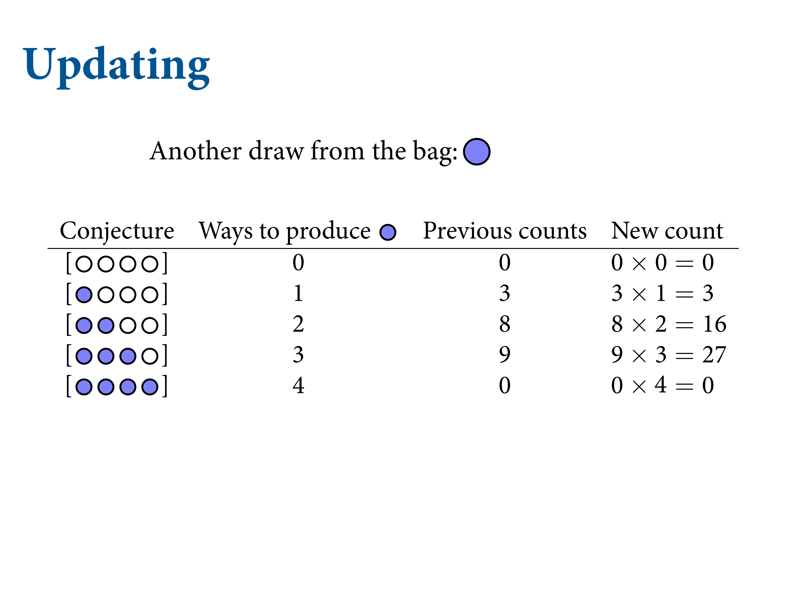
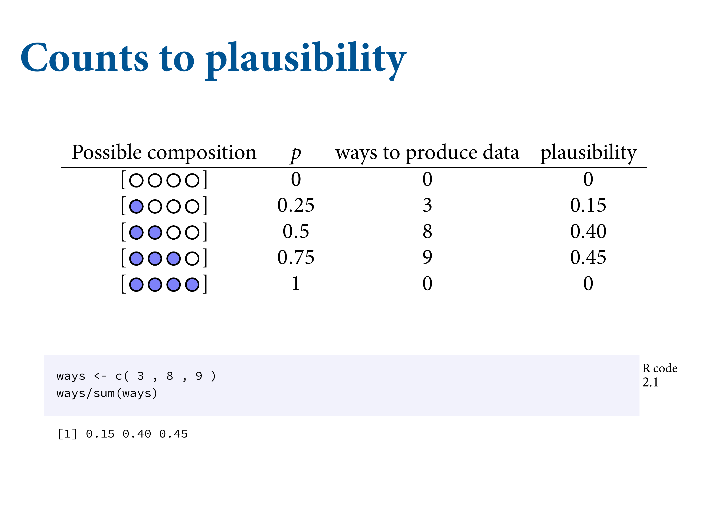

1.1 The garden of forking data

Figure 1.3: Consider a garden of forking data. Bag with 4 marbles in 2 colours - blue and white. Your job is to tell from a few draws from the bag, how many blue marbles and how many white marbles. List all the possibilities. 5 possibilities. Always step 1 in Bayesian analysis. Now draw, with replacement, three marbles. So what’s in the bag?
Figure 1.4: Let’s take a conjecture one at a time. Count all the ways you could see the data if that was the truth. Garden of forking data. Four paths based on this conjecture. On the second draw, there are again four things that could have happened. Do it a third time. Now prune it down and count the paths that are consistent with the data. Only three ways that we could have seen the data. Is three large or small? Need to compare it with another model; another conjecture.




Figure 1.5: No matter how complicated, Bayesian analysis is just counting.

Figure 1.6: Computers are good at counting. Computers are bad at being ethical. So you need to bring the responsibility to these counts. These are the relative plausibilities. Probably either 2 blue marbles or three. Say we draw another marble…
Figure 1.7: You can just update your previous count by mulitplying your previous counts, because that’s the way addition works. Multiplication is just compressed counting. Looks implausible that there’s only one blue marble. Keep drawing marbles until you reach a certain level of confidence.
Figure 1.8: You can use different types of data. Very straight forward. Say you have a friend who works in the factory. Every Bag contains at least one. In the factory manufacturing process, there are no all-blue or all-white. And there are specific ratios. How to use this? Multiply. The goal is to understand what’s happening mechanically in every Bayesian model. The computer is going to rank an infinite number of possibilities using the power of calculus based on their probability.

Figure 1.9: The counts get big really quickly due to combinatorics, so you normalise them between 0 and 1, which also makes them nice to work with.


ways = c(0, 3, 8, 9, 0)
ways/sum(ways)## [1] 0.00 0.15 0.40 0.45 0.00